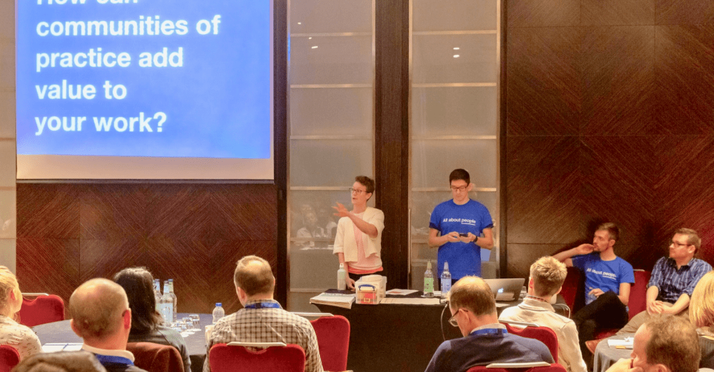
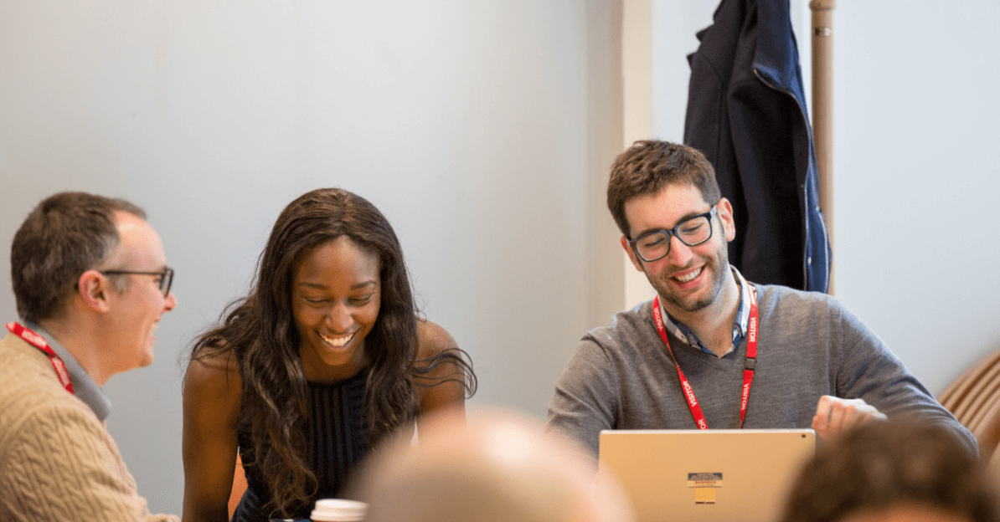
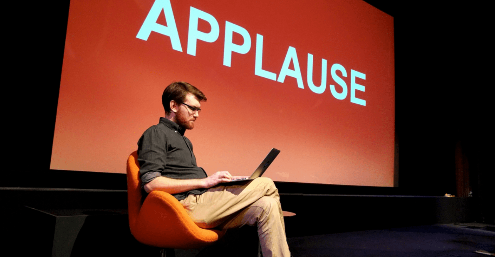
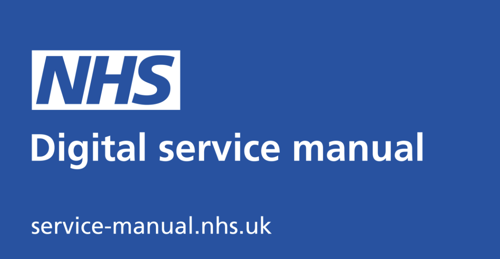
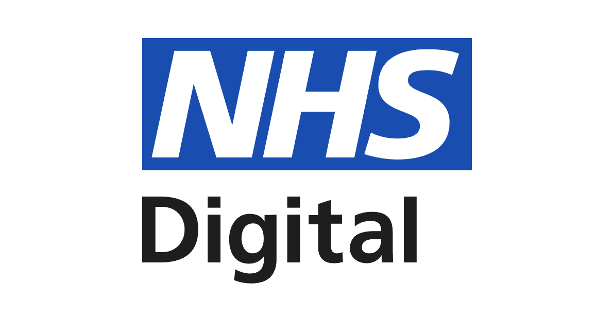

Building a Community of Practice
In this post we set out the steps we have taken to build the NHS Python community into a community of practice, and highlight the opportunities we created for new members to get involved with the running of the community.
What is a community of practice?
Communities of practice have been set up to bring together teams across government who share common job roles, responsibilities or remits, but otherwise are working in departmental/organisational silos. Their aims are to foster communication, interaction, and provide opportunities to share knowledge, ideas and experience.
Both the Central Digital and Data Office and the Government Digital Service in the Cabinet Office have developed resources over the years to help new communities of practice get started.
-

How digital, data and technology communities of practice can benefit you and your organisation
Communities of practice bring practitioners across government to share best practice, discuss challenges and develop their capability.
-

Tips on how to set up and maintain your own community - Government Digital Service
You can organise and run your own local network or community. Here are 8 steps to help you get going.
The NHS Python Community for Healthcare
Our community was set up to champion the use of python programming and open-source code in the NHS and healthcare sector. Python is an open source, state of the art programming language, used by analysts, developers, data scientists, and data engineers. Python's widespread adoption is, in part, due to its accessible 'human readable' syntax, making it relatively easy to pick up and learn. In fact, Python is already used extensively throughout the NHS and healthcare community.
NHS Python Community Board
The NHS Python Community Board exists to oversee the operations and activities of the NHS Python Community project. The Board will be responsible for promoting these principles and aims:
Principles and aims of the Python Community
- Promote the use of python in the healthcare by celebrating success and recognising contributions across the community
- Reduce barriers to entry by highlighting best practice with regard to software, IT operations, security, and coding in the open
- Open source and publish code to public GitHub repositories under appropriate licences (such as MIT, OGLv3, and GPLv3) alongside suitable open datasets or synthetic data so that our work can be further developed, re-used, and improved upon by everyone in the community
- Break down silos of expertise and improve technical communication and collaboration across the NHS, health and social care sectors
- Champion diversity, inclusion, and representation in tech by making coding accessible to all members of the community regardless of background or current level of ability
The NHS.pycom board meetings will meet monthly. It will govern, and provide a check and challenge function on project teams and will act as the parent group to any future sub-committees and technical advisory groups that form.
Board members are appointed for a 1 year term. Before the next financial year, the Board will vote on a fair procedure that will elect the next term's board members.
In accordance with communities' commitment to the principle of openness and transparency, the board summary notes will be published online, available here: https://github.com/nhs-pycom/nhs.pycom/tree/main/board_notes
Current Members:
-
Arouba Zubair
Data Analyst - NHSX
Hi, I'm Arouba. Co-founder of the NHS Python Community. Love all things related to data, neuroscience, and biotech! I'm passionate about coding in the open and encouraging all to develop their python skills.
-
Dr Mark Bailey
Speciality Doctor in Respiratory Medicine and Clinical Informatician - GHNHSFT
Clinician-who-codes (python, C++/arduino, VBA, AutoHotKey). Member of the Faculty of Clinical Informatics. Subspecialised in sleep medicine.
-
Sophie Williams, PhD
Research Data Scientist - Barts Health NHS Trust
I use Python to analyse NLP-enhanced hospital data to improve outcomes in disease areas relevant to our local patient needs. I have joined NHS-Python board because communities are so useful to bring together clinical and non-clinical people with data analysis interests to build skills and share knowledge.
-
Mary Amanuel
Data Analyst - NHSX. Co-founder of the NHS Python Community
Passionate about addressing health inequalities, open code and collaboration in the NHS, as well as encouraging staff from diverse and non-technical backgrounds to develop their programming skills.
-
Alex Cheung
Deployment manager - NHSE/I
Co-founder and chair of NHS python community with a great passion to bring innovative approaches to communities to raise profile for learning, professional development and collaboration.
-
Haris Shuaib
Head of Clinical Scientific Computing - Guy's & St Thomas' NHS Foundation Trust
I'm a Consultant Clinical Scientist and lead a multi-disciplinary team developing people, platforms and policy for digital health. We do lots of in-house development of medical devices and other applications and have benefitted greatly from working with engineers from outside our organisation. I hope the NHS Python community can really scale the use of Python in the NHS and empower NHS staff and organisations to take innovation into their own hands.
-
Jonny Pearson, PhD
Lead Data Scientist
Father of three huddersfield based data scientist with background in nuclear fusion and operational research. Always keen to hear about open source tools in the NHS, synthetic data generation, system modelling (especially discrete event simulation and agent based modelling) and forecasting.
-
Craig Shenton, PhD
Senior Data Engineer - NHSE Medical Directorate
Co-founder of the NHS Python Community, PhD Applied Mathematics and former Data Science Consultant. Python and open-source analytics enthusiast. Find me on GitHub making websites.
-
Juan Adriano, PhD
Data Scientist - Surrey and Borders Partnership NHS Foundation Trust
I am a Doctor in Health Informatics, currently working for the Analytics team at SABP. I use diverse Data Science (DS) approaches to analyse complex, significant scale and high impact operational / healthcare related problems by means of Python and the Python ecosystem. I think we should keep pushing forward the use of Python for conducting DS/Analytics projects within the NHS.
Executive Team
We expanded the NHS Python community team with new roles to create an executive group that can take forward the work building a community of practice. These are volunteer roles (as are all roles in the community) but require an appropriate level of time commitment: i.e., approximately 2 hours per week.
We were particularly looking for early-carers / apprentices / trainees who want to get involved. In this case, enthusiasm is more important than experience.
Community Manager
Responsibilities
- Establishing direction for the community, leading by example, and motivating our members and volunteers to get involved.
- Develop the overall strategic plan for growing the community with the NHS Python Community Board.
- Help recruit and manage the executive team.
- Build relationships with other communities of practice across the NHS and Government.
- Represent the organisation at external events and publicity opportunities.
- Report progress and seek approval from the Community Board.
Ideally, this role would suit someone who is employed by the NHS.
-
Community development framework
This guidance aims to help people develop and manage communities of practice across government.
-
Community development handbook
This handbook is for people developing communities of practice in government.
Content Manager
Responsibilities
- Find and curate content for the community website and slack channel.
- Help members of the community with copy editing and publishing on blogging platforms such as Medium.
- Develop the communities social media presence and brand identity.
Events Manager
Responsibilities
- Help organise, host, and deliver successful events that leave memorable experiences for the members of the community
- Book events using the ‘events.england.nhs.uk’ platform
- Place advertisements for events on AnalystX and send out comms to NHS data and analytics teams
- Work with our web developer to update the NHS Python community website events page
Ideally, this role would suit someone who is employed by the NHS.
-
Doing the hard work to make talks readable
Our slides are simple for a good reason: we want to encourage the audience to pay attention to the speaker, to listen to what they're saying out loud.
-

Giving clear presentations
Like 'bunting in the office' and 'cake on release days', 'slides with big words' has become one of GDS's hallmarks.
Web Developer
Responsibilities
- Further develop and update the NHS Python community website: https://nhs-pycom.net/
- Work with the NHS.UK template.
- Develop HTML/CSS skills.
- Manage the community GitHub site.
- Update community projects, blogs, event, and resources pages as needed.
Ideally, this role would suit someone who is employed by the NHS.
-

NHS Digital service manual
Use the service manual to build consistent, usable services that put people first. Learn from the research and experience of other NHS teams.
-

10 ways the NHS digital service manual can help you
If you want to build easy-to-use digital health services that put people first, Adrian Smith explains why the NHS digital service manual is a great place to start.